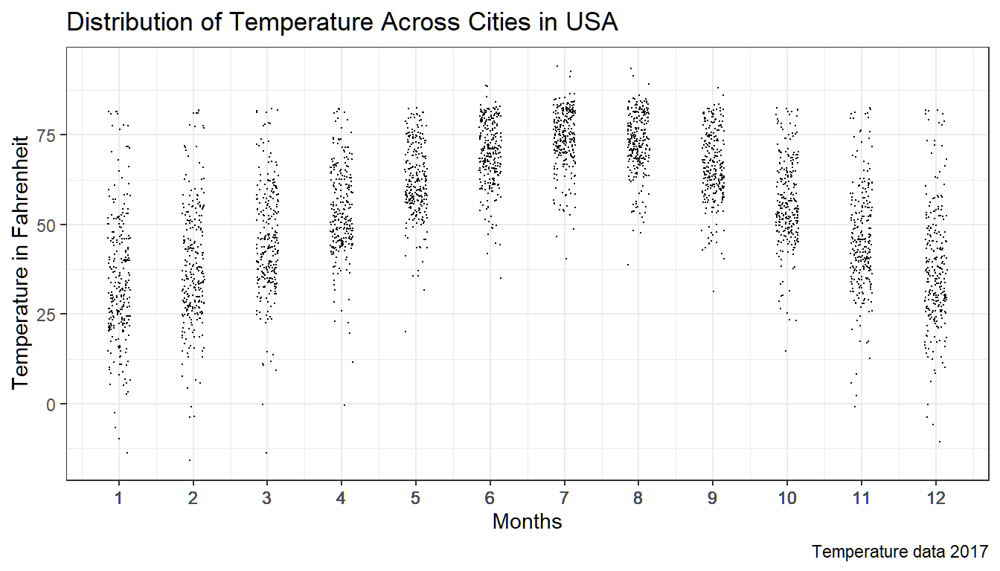
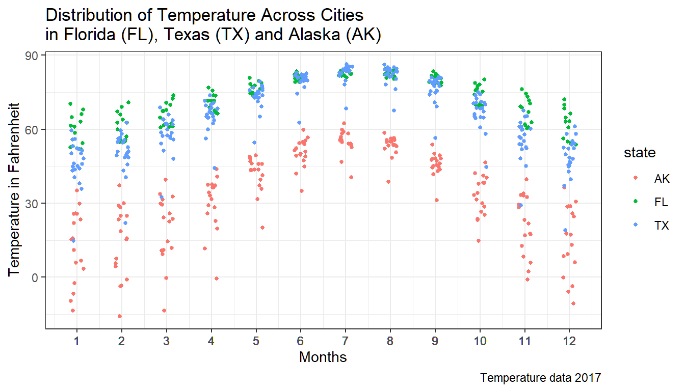
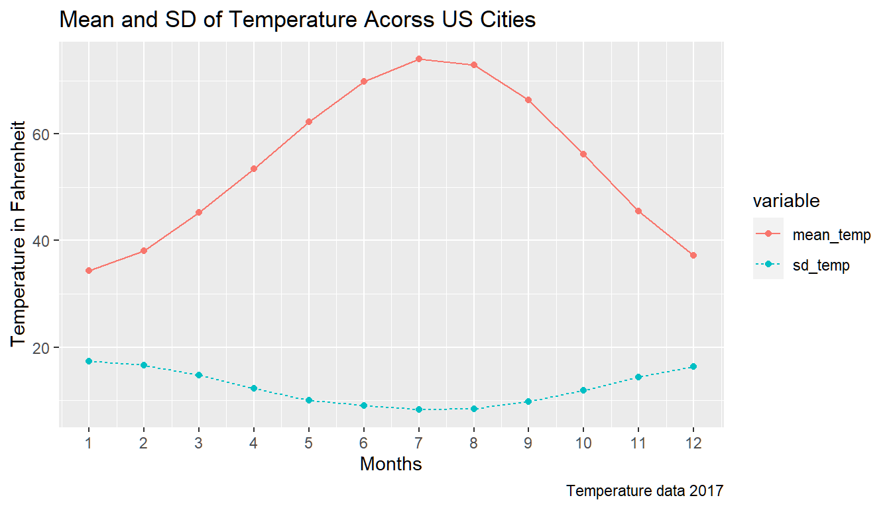
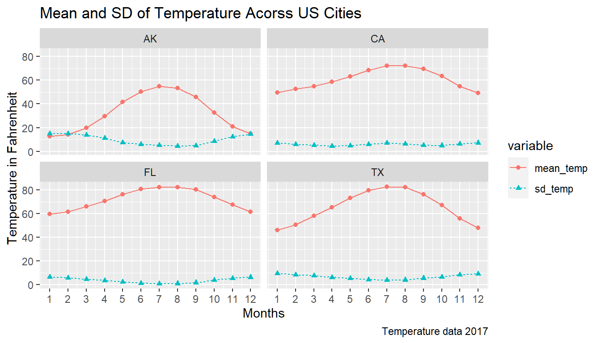
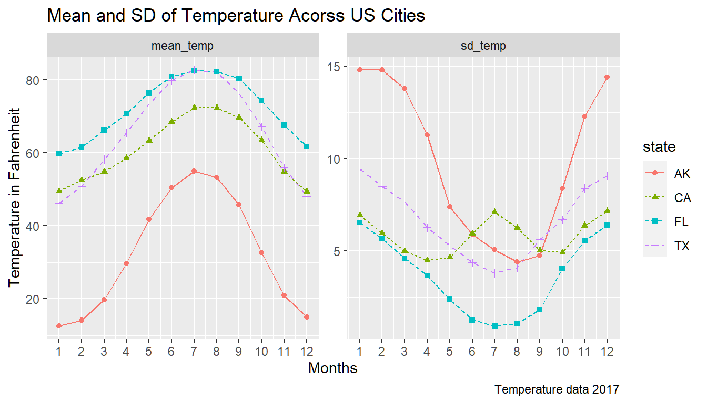
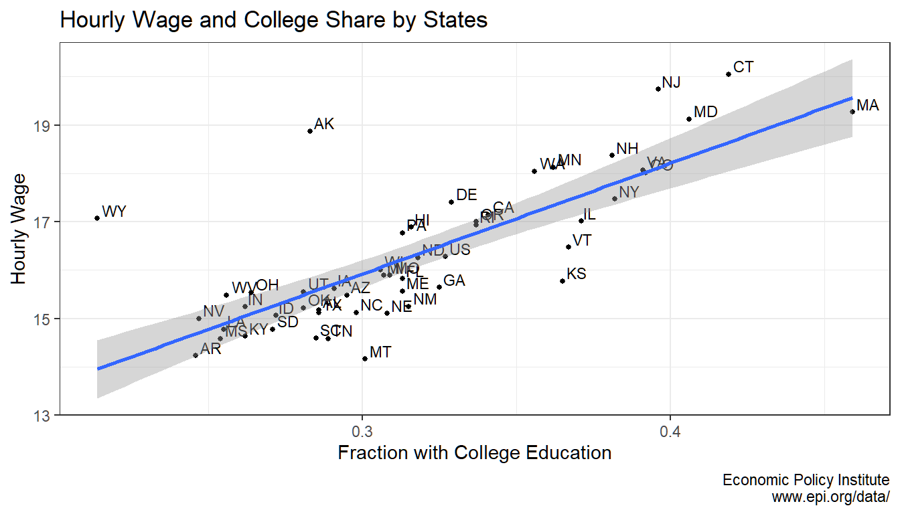

Chapter 3 Summarizing Data
3.1 Mean and Standard Deviation
Go back to fan’s REconTools Package, R Code Examples Repository (bookdown site), or Intro Stats with R Repository (bookdown site).
3.1.1 Temperature Across Locations over Time
Why do we need the standard deviation? We will demonstrate its usefulness by studying temperature dataset. This dataset covers a variety of cities in the United States across all States and Territories. For each city, we have the average temperature in each month. The unit of observation is at the city/month level. We have variables for the state, the city, the month and the average temperature.
The dataset, TempCitiesUSA.csv, can be downloaded here.
# Load in Data Tools
# For Reading/Loading Data
library(tidyverse)
# Load in Data
df_temp <- read_csv('data/TempCitiesUSA.csv')Listing Unique Levels for Categorical Variables in the Dataset
We can see that the state and city variables are string variables. We can show unique states and cities by months. In the program below, I append the number of observations for each category.
From the tables below, we can see that each city has 12 observations (for the 12 months), and each state has multiple cities.
# A function that shows Unique Values for Categorical Variables in a Table format
show.unique.values <- function(df, cate.var.str, lvl_str_max_len=15){
# Unique Categories
unique.cates <- df %>%
group_by(!!sym(cate.var.str)) %>%
summarise(freq = n()) %>%
mutate(distinct_N = paste0(!!sym(cate.var.str), ' (n=', freq, ')')) %>%
select(distinct_N)
# At most 10 columns
unique.count <- dim(unique.cates)[1]
col.count <- min(ceiling(sqrt(unique.count)), 8)
row.count <- ceiling(unique.count/col.count)
# Generate Table to Fill in
expand.length = row.count*col.count
unique.cates.expand <- vector(mode = "character", length = expand.length)
# Unique Categories and Counts
unique.cates.shorter <- substring(t(unique.cates), first = 1, last = lvl_str_max_len)
unique.cates.expand[0:unique.count] <- unique.cates.shorter
# Reshape
dim(unique.cates.expand) <- c(row.count, col.count)
# Show
title <- sprintf("From Dataset: %s, %d unique Levels for: %s",
deparse(substitute(df)), unique.count, cate.var.str)
return(list(title=title,
levels=unique.cates.expand))
}# List of categorical Variables
cate.vars.list <- c('month', 'state', 'city')
lapply(cate.vars.list, show.unique.values, df = df_temp, lvl_str_max_len = 30)## [[1]]
## [[1]]$title
## [1] "From Dataset: df_temp, 12 unique Levels for: month"
##
## [[1]]$levels
## [,1] [,2] [,3] [,4]
## [1,] "1 (n=261)" "4 (n=261)" "7 (n=261)" "10 (n=261)"
## [2,] "2 (n=261)" "5 (n=261)" "8 (n=261)" "11 (n=261)"
## [3,] "3 (n=261)" "6 (n=261)" "9 (n=261)" "12 (n=261)"
##
##
## [[2]]
## [[2]]$title
## [1] "From Dataset: df_temp, 59 unique Levels for: state"
##
## [[2]]$levels
## [,1] [,2] [,3] [,4] [,5] [,6] [,7]
## [1,] "AK (n=204)" "CO (n=60)" "ID (n=36)" "MARSHALL IS. (n=12)" "NC (n=60)" "OH (n=84)" "SC (n=24)"
## [2,] "AL (n=36)" "CT (n=24)" "IL (n=48)" "MD (n=12)" "ND (n=48)" "OK (n=24)" "SD (n=48)"
## [3,] "AMER SAMOA (n=12)" "D.C. (n=24)" "IN (n=48)" "ME (n=24)" "NE (n=96)" "OR (n=84)" "TN (n=48)"
## [4,] "AR (n=36)" "DE (n=12)" "KS (n=60)" "MI (n=108)" "NH (n=24)" "PA (n=72)" "TX (n=252)"
## [5,] "AZ (n=60)" "FL (n=156)" "KY (n=36)" "MN (n=60)" "NJ (n=24)" "PA. (n=12)" "UT (n=24)"
## [6,] "CA (n=180)" "GA (n=60)" "LA (n=48)" "MO (n=48)" "NM (n=36)" "PC (n=48)" "VA (n=48)"
## [7,] "CA. (n=12)" "HI (n=36)" "MA (n=36)" "MS (n=36)" "NV (n=60)" "PR (n=12)" "VT (n=12)"
## [8,] "CAROLINE IS. (n=12)" "IA (n=36)" "MARSHALL IS (n=12)" "MT (n=72)" "NY (n=108)" "RI (n=12)" "WA (n=72)"
## [,8]
## [1,] "WI (n=48)"
## [2,] "WV (n=48)"
## [3,] "WY (n=48)"
## [4,] ""
## [5,] ""
## [6,] ""
## [7,] ""
## [8,] ""
##
##
## [[3]]
## [[3]]$title
## [1] "From Dataset: df_temp, 254 unique Levels for: city"
##
## [[3]]$levels
## [,1] [,2] [,3] [,4]
## [1,] "ABERDEEN (n=12)" "BOSTON (n=12)" "ELKO (n=12)" "HOUGHTON LAKE (n=12)"
## [2,] "ABILENE (n=12)" "BRIDGEPORT (n=12)" "ELY (n=12)" "HOUSTON (n=12)"
## [3,] "AKRON (n=12)" "BROWNSVILLE (n=12)" "ERIE (n=12)" "HUNTINGTON (n=12)"
## [4,] "ALAMOSA (n=12)" "BUFFALO (n=12)" "EUGENE (n=12)" "HUNTSVILLE (n=12)"
## [5,] "ALBANY (n=12)" "BURLINGTON (n=12)" "EUREKA (n=12)" "HURON (n=12)"
## [6,] "ALBUQUERQUE (n=12)" "CAPE HATTERAS (n=12)" "EVANSVILLE (n=12)" "INDIANAPOLIS (n=12)"
## [7,] "ALLENTOWN (n=12)" "CARIBOU (n=12)" "FAIRBANKS (n=12)" "INTERNATIONAL FALLS (n=12)"
## [8,] "ALPENA (n=12)" "CASPER (n=12)" "FARGO (n=12)" "ISLIP (n=12)"
## [9,] "AMARILLO (n=12)" "CHARLESTON (n=12)" "FLAGSTAFF (n=12)" "JACKSON (n=24)"
## [10,] "ANCHORAGE (n=12)" "CHARLOTTE (n=12)" "FLINT (n=12)" "JACKSONVILLE (n=12)"
## [11,] "ANNETTE (n=12)" "CHATTANOOGA (n=12)" "FORT MYERS (n=12)" "JOHNSTON ISLAND (n=12)"
## [12,] "APALACHICOLA (n=12)" "CHEYENNE (n=12)" "FORT SMITH (n=12)" "JUNEAU (n=12)"
## [13,] "ASHEVILLE (n=12)" "CLAYTON (n=12)" "FORT WAYNE (n=12)" "KAHULUI (n=12)"
## [14,] "ASTORIA (n=12)" "CLEVELAND (n=12)" "FRESNO (n=12)" "KALISPELL (n=12)"
## [15,] "ATHENS (n=12)" "COLORADO SPRINGS (n=12)" "GAINESVILLE (n=12)" "KANSAS CITY (n=12)"
## [16,] "ATLANTA (n=12)" "COLUMBIA (n=24)" "GALVESTON (n=12)" "KEY WEST (n=12)"
## [17,] "ATLANTIC CITY AP (n=12)" "COLUMBUS (n=24)" "GLASGOW (n=12)" "KING SALMON (n=12)"
## [18,] "AUSTIN/BERGSTROM (n=12)" "CONCORD (n=12)" "GOODLAND (n=12)" "KNOXVILLE (n=12)"
## [19,] "AUSTIN/CITY (n=12)" "CONCORDIA (n=12)" "GRAND FORKS (n=12)" "KODIAK (n=12)"
## [20,] "AVOCA (n=12)" "CORPUS CHRISTI (n=12)" "GRAND ISLAND (n=12)" "KOROR (n=12)"
## [21,] "BAKERSFIELD (n=12)" "DALLAS-FORT WORTH (n=12)" "GRAND JUNCTION (n=12)" "KOTZEBUE (n=12)"
## [22,] "BALTIMORE (n=12)" "DALLAS-LOVE FIELD (n=12)" "GRAND RAPIDS (n=12)" "KWAJALEIN (n=12)"
## [23,] "BARROW (n=12)" "DAYTON (n=12)" "GREAT FALLS (n=12)" "LA CROSSE (n=12)"
## [24,] "BATON ROUGE (n=12)" "DAYTONA BEACH (n=12)" "GREEN BAY (n=12)" "LAKE CHARLES (n=12)"
## [25,] "BECKLEY (n=12)" "DEL RIO (n=12)" "GREENVILLE-SPARTANBURG AP (n=1" "LANDER (n=12)"
## [26,] "BETHEL (n=12)" "DENVER (n=12)" "GUAM (n=12)" "LANSING (n=12)"
## [27,] "BILLINGS (n=12)" "DES MOINES (n=12)" "HARRISBURG (n=12)" "LAS VEGAS (n=12)"
## [28,] "BINGHAMTON (n=12)" "DETROIT (n=12)" "HARTFORD (n=12)" "LEWISTON (n=12)"
## [29,] "BISHOP (n=12)" "DODGE CITY (n=12)" "HAVRE (n=12)" "LEXINGTON (n=12)"
## [30,] "BISMARCK (n=12)" "DULUTH (n=12)" "HELENA (n=12)" "LIHUE (n=12)"
## [31,] "BLUE HILL (n=12)" "EL PASO (n=12)" "HILO (n=12)" "LINCOLN (n=12)"
## [32,] "BOISE (n=12)" "ELKINS (n=12)" "HOMER (n=12)" "LITTLE ROCK (n=12)"
## [,5] [,6] [,7] [,8]
## [1,] "LONG BEACH (n=12)" "NEWARK (n=12)" "ROSWELL (n=12)" "TAMPA (n=12)"
## [2,] "LOS ANGELES AP (n=12)" "NOME (n=12)" "SACRAMENTO (n=12)" "TOLEDO (n=12)"
## [3,] "LOS ANGELES C.O. (n=12)" "NORFOLK (n=24)" "SAINT CLOUD (n=12)" "TOPEKA (n=12)"
## [4,] "LOUISVILLE (n=12)" "NORTH LITTLE ROCK (n=12)" "SALEM (n=12)" "TUCSON (n=12)"
## [5,] "LUBBOCK (n=12)" "NORTH PLATTE (n=12)" "SALT LAKE CITY (n=12)" "TULSA (n=12)"
## [6,] "LYNCHBURG (n=12)" "OKLAHOMA CITY (n=12)" "SAN ANGELO (n=12)" "TUPELO (n=12)"
## [7,] "MACON (n=12)" "OLYMPIA (n=12)" "SAN ANTONIO (n=12)" "UNALAKLEET (n=12)"
## [8,] "MADISON (n=12)" "OMAHA (NORTH) (n=12)" "SAN DIEGO (n=12)" "VALDEZ (n=12)"
## [9,] "MAJURO (n=12)" "OMAHA EPPLEY AP (n=12)" "SAN FRANCISCO AP (n=12)" "VALENTINE (n=12)"
## [10,] "MANSFIELD (n=12)" "ORLANDO (n=12)" "SAN FRANCISCO C.O. (n=12)" "VERO BEACH (n=12)"
## [11,] "MARQUETTE (n=12)" "PAGO PAGO (n=12)" "SAN JUAN (n=12)" "VICTORIA (n=12)"
## [12,] "MCGRATH (n=12)" "PENDLETON (n=12)" "SANTA BARBARA (n=12)" "WACO (n=12)"
## [13,] "MEDFORD (n=12)" "PENSACOLA (n=12)" "SANTA MARIA (n=12)" "WAKE ISLAN+B1214D (n=1)"
## [14,] "MEMPHIS (n=12)" "PEORIA (n=12)" "SAULT STE. MARIE (n=12)" "WAKE ISLAND (n=11)"
## [15,] "MERIDIAN (n=12)" "PHILADELPHIA (n=12)" "SAVANNAH (n=12)" "WASHINGTON DULLES AP (n=12)"
## [16,] "MIAMI (n=12)" "PHOENIX (n=12)" "SCOTTSBLUFF (n=12)" "WASHINGTON NAT'L AP (n=12)"
## [17,] "MIDLAND-ODESSA (n=12)" "PITTSBURGH (n=12)" "SEATTLE C.O. (n=12)" "WATERLOO (n=12)"
## [18,] "MILFORD (n=12)" "POCATELLO (n=12)" "SEATTLE SEA-TAC AP (n=12)" "WEST PALM BEACH (n=12)"
## [19,] "MILWAUKEE (n=12)" "POHNPEI (n=12)" "SEXTON SUMMIT (n=12)" "WICHITA (n=12)"
## [20,] "MINNEAPOLIS-ST.PAUL (n=12)" "PORT ARTHUR (n=12)" "SHERIDAN (n=12)" "WICHITA FALLS (n=12)"
## [21,] "MISSOULA (n=12)" "PORTLAND (n=24)" "SHREVEPORT (n=12)" "WILLIAMSPORT (n=12)"
## [22,] "MOBILE (n=12)" "PROVIDENCE (n=12)" "SIOUX CITY (n=12)" "WILLISTON (n=12)"
## [23,] "MOLINE (n=12)" "PUEBLO (n=12)" "SIOUX FALLS (n=12)" "WILMINGTON (n=24)"
## [24,] "MONTGOMERY (n=12)" "QUILLAYUTE (n=12)" "SOUTH BEND (n=12)" "WINNEMUCCA (n=12)"
## [25,] "MOUNT SHASTA (n=12)" "RALEIGH (n=12)" "SPOKANE (n=12)" "WINSLOW (n=12)"
## [26,] "MT. WASHINGTON (n=12)" "RAPID CITY (n=12)" "SPRINGFIELD (n=24)" "WORCESTER (n=12)"
## [27,] "MUSKEGON (n=12)" "REDDING (n=12)" "ST. LOUIS (n=12)" "YAKIMA (n=12)"
## [28,] "NASHVILLE (n=12)" "RENO (n=12)" "ST. PAUL ISLAND (n=12)" "YAKUTAT (n=12)"
## [29,] "NEW ORLEANS (n=12)" "RICHMOND (n=12)" "STOCKTON (n=12)" "YOUNGSTOWN (n=12)"
## [30,] "NEW YORK (JFK AP) (n=12)" "ROANOKE (n=12)" "SYRACUSE (n=12)" "YUMA (n=12)"
## [31,] "NEW YORK (LAGUARDIA AP) (n=12)" "ROCHESTER (n=24)" "TALKEETNA (n=12)" ""
## [32,] "NEW YORK C.PARK (n=12)" "ROCKFORD (n=12)" "TALLAHASSEE (n=12)" ""3.1.1.1 Scatter Plot of Temperature and Months
We can do a scatter plot where the x-axis is a month and the y-axis is the temperature in each city, to get a sense of the distribution of temperatures. What does this chart show us? Is this the pattern you would have expected?
- the overall temperature is higher during summer months
- the temperature is more tightly distributed during summer months than January or December
The United State is pretty big, during the winter months some places are frigid, and other areas are very hot. During the summer months, however, most places are warmer.
# Control Graph Size
options(repr.plot.width = 5, repr.plot.height = 5)
# Draw Scatter Plot
# 1. specify x and y
# 2. label each state
# 3. add in trend line
scatter <- ggplot(df_temp, aes(x=month, y=temp.f)) +
geom_jitter(size=0.1, width = 0.15) +
labs(title = 'Distribution of Temperature Across Cities in USA',
x = 'Months',
y = 'Temperature in Fahrenheit',
caption = 'Temperature data 2017') +
scale_x_continuous(labels = as.character(df_temp$month),
breaks = df_temp$month) +
theme_bw()
print(scatter)
3.1.1.2 Scatter Plot of Temperature and Months for 3 States
Now, we will generate a similar chart as above, but let’s select three states, and use different colors for each of the three states.
We can see that there are differences in average temperature across cities in each state in each month, but the different states also have different levels of variations in city temperatures within months.
We want to calculate both mean and standard deviations to capture both differences in averages over the year, as well as differences in how temperature varies within a month over the year.
# Control Graph Size
options(repr.plot.width = 5, repr.plot.height = 5)
# First Filter Data
df_temp_txflak <- df_temp %>% filter(state %in% c('AK', 'TX', 'FL'))
# Draw Scatter Plot
# 1. specify x and y
# 2. label each state
# 3. add in trend line
scatter <- ggplot(df_temp_txflak, aes(x=month, y=temp.f,
colour=state)) +
geom_jitter(size=1, width = 0.15) +
labs(title = 'Distribution of Temperature Across Cities\nin Florida (FL), Texas (TX) and Alaska (AK)',
x = 'Months',
y = 'Temperature in Fahrenheit',
caption = 'Temperature data 2017') +
scale_x_continuous(labels = as.character(df_temp$month),
breaks = df_temp$month) +
theme_bw()
print(scatter)
3.1.1.3 Mean and Standard Deviation Within Month Acorss USA
We can calculate the average temperature, as well as the standard deviation of temperature, in each month across cities in the USA. Let’s show what these are using dplyr, and let’s graph them out.
It’s pretty amazing what mean, and standard deviation can do for us. We started with a dataset with many many observations, many many temperatures. Now with just 24 numbers below, we have created a way to summarize the large set of observations concisely. Twelve numbers for means for the 12 months, and 12 numbers for the standard deviations in 12 months.
This is like flying in the sky and taking a snapshot of the ground below from thousands of miles up.
The exciting thing here is, which statistics should we generate to adequately summarize what is going on on the ground within all the data observations? In this case here, if we show the mean, it informatively indicates that temperature is hotter during the summer, but it does not show the tightening of the temperature distribution during the summer months that we see in the scatter plot above. Adding standard deviation to our summary statistics, however, allows us also to see that as well.
# Show mean and standard deviation in tabular form
df_temp_mth_summ <- df_temp %>%
group_by(month) %>%
summarise(mean_temp = mean(temp.f), sd_temp = sd(temp.f))# Control Graph Size
options(repr.plot.width = 5, repr.plot.height = 4)
# Show mean and standard deviation in graphical form
# We will gather the data first, it is an essential reshaping command
lineplot <- df_temp_mth_summ %>%
gather(variable, value, -month) %>%
ggplot(aes(x=month, y=value, colour=variable, linetype=variable)) +
geom_line() +
geom_point() +
labs(title = 'Mean and SD of Temperature Acorss US Cities',
x = 'Months',
y = 'Temperature in Fahrenheit',
caption = 'Temperature data 2017') +
scale_x_continuous(labels = as.character(df_temp_mth_summ$month),
breaks = df_temp_mth_summ$month)
print(lineplot)
3.1.1.4 Mean and Standard Deviation Within Month Acorss States in USA
We have various states, how do these mean and sd charts vary across the big states that we have, where there are numerous cities in each state?
Let’s generate some state-specific charts, using very simple commands below, and see how fascinating the United States is.
Specifically, we will have two charts: 1. the first chart has 4 subplots for each state showing the mean and sd for each state across months 2. the second chart has 2 subplots, showing inside each four lines for the four states.
# Control Graph Size
options(repr.plot.width = 6, repr.plot.height = 6)
# Show mean and standard deviation in graphical form
# We start from the dataset:
# 1. select a subset of states we want
# 2. group by state and month to generate mean and sd
# 3. reshape data with gather
# 4. generate line plots, state by state
lineplot <- df_temp %>%
filter(state %in% c('AK', 'CA', 'FL', 'TX')) %>%
group_by(state, month) %>%
summarise(mean_temp = mean(temp.f), sd_temp = sd(temp.f)) %>%
gather(variable, value, -month, -state) %>%
ggplot(aes(x=month, y=value,
colour=variable, linetype=variable, shape=variable)) +
facet_wrap( ~ state) +
geom_line() +
geom_point() +
labs(title = 'Mean and SD of Temperature Acorss US Cities',
x = 'Months',
y = 'Temperature in Fahrenheit',
caption = 'Temperature data 2017') +
scale_x_continuous(labels = as.character(df_temp_mth_summ$month),
breaks = df_temp_mth_summ$month)
print(lineplot)
# Control Graph Size
options(repr.plot.width = 6, repr.plot.height = 4)
# Show mean and standard deviation in graphical form
# We start from the dataset:
# 1. select a subset of states we want
# 2. group by state and month to generate mean and sd
# 3. reshape data with gather
# 4. generate line plots, state by state
lineplot <- df_temp %>%
filter(state %in% c('AK', 'CA', 'FL', 'TX')) %>%
group_by(state, month) %>%
summarise(mean_temp = mean(temp.f), sd_temp = sd(temp.f)) %>%
gather(variable, value, -month, -state) %>%
ggplot(aes(x=month, y=value,
colour=state, linetype=state, shape=state)) +
facet_wrap( ~ variable, scales="free_y") +
geom_line() +
geom_point() +
labs(title = 'Mean and SD of Temperature Acorss US Cities',
x = 'Months',
y = 'Temperature in Fahrenheit',
caption = 'Temperature data 2017') +
scale_x_continuous(labels = as.character(df_temp_mth_summ$month),
breaks = df_temp_mth_summ$month)
print(lineplot)
3.2 Coefficient of Variation and Correlation
Go back to fan’s REconTools Package, R Code Examples Repository (bookdown site), or Intro Stats with R Repository (bookdown site).
We have various tools at our disposal to summarize variables and the relationship between variables. Imagine that we have multiple toolboxes. This is the first one. There are two levels to this toolbox. Three Basic Tools:
- (sample) Mean of X (or Y)
- (sample) Standard Deviation of X (or Y)
- (sample) Covariance of X and Y
Additionally, we have two tools that combine the tools from the first level:
- Coefficient of Variation = (Standard Deviation)/(Mean)
- Correlation = (Covariance of X and Y)/((Standard Deviation of X)*(Standard Deviation of Y))
The tools on the second level rescale the standard deviation and covariance statistics.
3.2.1 Education and Wage
The dataset, EPIStateEduWage2017.csv, can be downloaded here.
Two variables:
- Fraction of individual with college degree in a state
- this is in Fraction units, the minimum is 0.00, the maximum is 100 percent, which is 1.00
- Average hourly salary in the state
- this is in Dollar units
# Load in Data Tools
# For Reading/Loading Data
library(readr)
library(tibble)
library(dplyr)
library(ggplot2)
# Load in Data
df_wgedu <- read_csv('data/EPIStateEduWage2017.csv')3.2.1.1 A Scatter Plot
We can Visualize the Data with a Scatter Plot. There seems to be a positive relationship between the share of individuals in a state with a college education, and the average hourly salary in that state.
While most states are along the trend line, we have some states, like WY, that are outliers. WY has a high hourly salary but low share with college education.
# Control Graph Size
options(repr.plot.width = 5, repr.plot.height = 5)
# Draw Scatter Plot
# 1. specify x and y
# 2. label each state
# 3. add in trend line
scatter <- ggplot(df_wgedu, aes(x=Share.College.Edu, y=Hourly.Salary)) +
geom_point(size=1) +
geom_text(aes(label=State), size=3, hjust=-.2, vjust=-.2) +
geom_smooth(method=lm) +
labs(title = 'Hourly Wage and College Share by States',
x = 'Fraction with College Education',
y = 'Hourly Wage',
caption = 'Economic Policy Institute\n www.epi.org/data/') +
theme_bw()
print(scatter)
3.2.1.2 Standard Deviations and Coefficient of Variation
The two variables above are in different units. We first calculate the mean, standard deviation, and covariance. With just these, it is hard to compare the standard deviation of the two variables, which are on different scales.
The sample standard deviations for the two variables are: \(0.051\) and \(1.51\), in fraction and dollar units. Can we say the hourly salary has a larger standard deviation? But it is just a different scale. \(1.51\) is a large number, but that does not mean that variable has greater variation than the fraction with college education variable.
Converting the Statistics to Coefficient of Variations, now we have: \(0.16\) and \(0.09\). Because of the division, these are both in fraction units–standard deviations as a fraction of the mean. Now these are more comparable.
# We can compute the three basic statistics
stats.msdv <- list(
# Mean, SD and Var for the College Share variable
Shr.Coll.Mean = mean(df_wgedu$Share.College.Edu),
Shr.Coll.Std = sd(df_wgedu$Share.College.Edu),
Shr.Coll.Var = var(df_wgedu$Share.College.Edu),
# Mean, SD and Var for the Hourly Wage Variable
Hr.Wage.Mean = mean(df_wgedu$Hourly.Salary),
Hr.Wage.Std = sd(df_wgedu$Hourly.Salary),
Hr.Wage.Var = var(df_wgedu$Hourly.Salary)
)
# We can compute the three basic statistics
stats.coefvari <- list(
# Coefficient of Variation
Shr.Coll.Coef.Variation = (stats.msdv$Shr.Coll.Std)/(stats.msdv$Shr.Coll.Mean),
Hr.Wage.Coef.Variation = (stats.msdv$Hr.Wage.Std)/(stats.msdv$Hr.Wage.Mean)
)
# Let's Print the Statistics we Computed
as_tibble(stats.msdv)
as_tibble(stats.coefvari)3.2.1.3 Covariance and Correlation
For covariance, hard to tell whether it is large or small. To make comparisons possible, we calculate the coefficient of variations and correlation statistics.
The covariance we get is positive: \(0.06\), but is this actually large positive relationship? \(0.06\) seems like a small number.
Rescaling covariance to correlation, the correlation between the two variables is: \(0.78\). Since the correlation of two variable is below \(-1\) and \(+1\), we can now say actually the two variables are very positively related. A higher share of individuals with a college education is strongly positively correlated with a higher hourly salary.
# We can compute the three basic statistics
states.covcor <- list(
# Covariance between the two variables
Shr.Wage.Cov = cov(df_wgedu$Hourly.Salary,
df_wgedu$Share.College.Edu),
# Correlation
Shr.Wage.Cor = cor(df_wgedu$Hourly.Salary, df_wgedu$Share.College.Edu),
Shr.Wage.Cor.Formula = (cov(df_wgedu$Hourly.Salary, df_wgedu$Share.College.Edu)
/(stats.msdv$Shr.Coll.Std*stats.msdv$Hr.Wage.Std))
)
# Let's Print the Statistics we Computed
as_tibble(states.covcor)